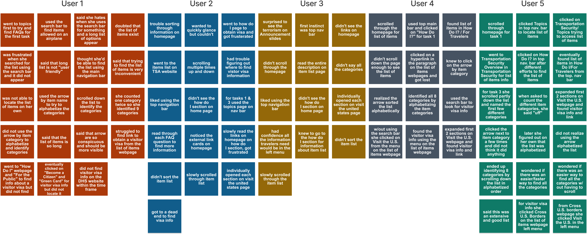

Department of Homeland Security Web Redesign
About the Project
This project was a part of the Information Architecture and Interaction Design course at University of Minnesota.
Department of Homeland Security is the U.S. federal executive department responsible for safegaurding the American people and the homeland.
When I analyzed the government department’s website I concluded that the purpose of the organization was unclear and it was difficult to understand what the department is responsible for. We thought this was a pefect opportunity to redesign the website. The current website suffered from poor usability, clutter, and overall an outdated design, and this is when we thought that we should come up with a solution to this problem.
The Idea
My idea was to redesign the website to create a pleasant experience for users trying to find specific information and to create a clear idea of what the department is about.
Tools
Figma, Miro, Storyboardthat, Trello
Deliverables
User Research (Interviews + Surveys) & Analysis, Persona Creation, Sitemap, UI Style, Interaction Design, Wireframing, Prototyping, In-person User Testing.
Department of Homeland Security’s Current Website
Deparment of Homeland Security’s current website, though extremely informative, is not without its flaws. The website's information architecture requires re-work, interaction states need improvement, the homepage is cluttered and the purpose of the organization is unclear. (Redline Annotations)
The Design Process
We followed a User Centered Design Process.

Step 1: User Research
I first conducted 5 virtual usability tests with various demographics to find answers to how I might be able to help improve the process of finding resources within the current Department of Homeland Security Website. I asked users to perform 3 tasks:

Usability Test Results
To better understand our user’s usability tests I oberserved and wrote down the users’ actions and feelings on post its to later create a priority matrix.
Usability Tests Analysis
From these interviews, I learned that it is often difficult for users to navigate through the website. I discovered that users had a lot of trouble locating specific information and were frustrated. Additionally, users did not understand the purpose of the department and what role the department plays.
To analyze the results further I created a priority matrix, measuring the highest priority for the department compared to the highest priority for the user.
Step 2: Define
We took our user research findings to create a persona and defined our problem statement.
Persona Creation
Based on my gathered research data, I formulated the following Persona:

Key Findings
I analyzed my research data and learned the following:

User Insight
A person traveling to the United States needs specific resources to ensure safety while traveling because they weren’t able to get credible information from friends.
During usability tests, we discovered that a majority of individuals trust straightfoward information that meet their specific needs or issues.
Therefore, we believe that people are not finding the kind of resources they need and that we might be able to help if we draw more attention to the purpose and credibility of the Deparment of Homeland Security
We might do this by organizing the resources more effectively. Doing this will allow our redesign to assist people feel more confident in finding dependable resources, quickly and easily.
Problem Statement
The Department of Homeland Security was created to safeguard the American people, the homeland, and their values. We have observed that the current department’s offerings aren’t as visible as they could be, which does not align with the department’s mision ensuring safety, and frustrates users visiting the site to find resources. How might we improve the Department of Homeland’s Security website so that our customers are successful based on the amount of time it takes users to get to their needed resources??
Step 3: Ideation
Our team then discussed the possible solutions to our users’ problems.
Our Solutions
Based on value and effort the solutions my team and I came up with are the following:

Card Sorting
Based on our initial observations when users interacted with current website, we knew the informational architecture would need rework. We created 76 cards to be sorted into categories by and analyzed the results to formulate a draft information architecture in the form of a Site Map:

Step 4: Interaction Design
This step marked the process of implementing our solutions and new informational architecture into a design,
Low-Fidelity Prototype
After acknowledging the problems of the current website and coming up with potential solutions, it was time to move to the next step, which involved creating quick interactive low-fidelity prototype. I used Figma to design and build the prototype.

Prototype Testing
Once our low-fidelity prototypes were ready, we moved to testing our design, which involved users completing tasks and providing their feedback.
The tasks we asked users to perform were the following:

I performed 4 user tests due to the time constraint. The users were asked to use the 'think-aloud' method. While they performed these tasks, I observed them and asked questions to gain a deeper understanding of what improvements could be made.
We found that users responded well to the organization of the informational architecture. But users were confused between the difference of the white and blue cards. I understood this might be because there no content on those cards, but I still kept that in mind for the high fidelity prototype.
High-Fidelity Prototypes
After thorough user testing, we made improvements to the prototypes and then started building the high-fidelity digital prototype. We continued using Figma throughout this prototyping process.
Click on screen to view to interact with prototype!

Reflection
Key Takeaways
This project was part of the Univeristy of Minnesota UI/UX Bootcamp Informational Architecture course. It was a little difficult due to the 2 week time constraint and the vast amount of information on Department of Homeland Security website, but I love a challenge. I was excited to tackle the informational architecture of the website. This was also my first time prototyping a redesign for a website. To help me with this redesign I followed the design process and adapted where I needed to.
Next Steps
In the interest of time I set a small scope to deliver a quality project. I focused on utilizing the homepage and redesigning the informational architecture. Some of my next steps would be building out secondary pages and designing a mobile version as well. I would also like to go deeper with the informational architecture and conduct open card sorting to show what users logically group together.